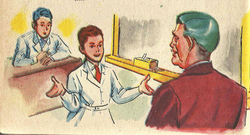
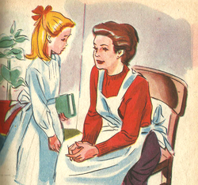
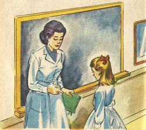

¡Qué buena era mi maestra de tercer grado!
¡Con qué paciencia nos enseñaba!
Era más bien joven, de estatura mediana y muy simpática.
Nunca la vimos de mal humor y jamás oímos alterado el tono pausado y dulce de su voz.
Cuando algún alumno no respondía a sus desvelos, con una sonrisa un poco triste reconvenía su conducta.
Era hija única y el sostén de sus padres.
Un día llegó el inspector a tomarnos examen. Interrogó al mejor alumno del grado y éste parecía haberlo olvidado todo.
Nuestra maestra palideció, pero no dijo una palabra.
Yo la miré... sufrí por su angustia... mis ojos se humedecieron. .. y me decidí.
Si bien es cierto que no figuraba entre los mejores alumnos, alguien me inspiró en ese momento y sin medir las consecuencias, levanté la mano y pedí hablar en reemplazo del niño que guardaba silencio y nos estaba torturando a todos.
El señor inspector lo hizo sentar y comenzó a interrogarme.
Ante la sorpresa de mis compañeros respondí a las preguntas con tanto acierto, que ellos se animaron, perdieron el temor, y aquel principio de examen que pareció un fracaso para nuestra querida maestra, se transformó en uno de los triunfos más importantes de su carrera.
Lo merecía; había trabajado mucho y bien.
Cuando el señor inspector abandonó el salón de clase, después de felicitarnos a todos, rodeamos a la señorita, y como si fuese nuestra madre, la abrazamos y le dijimos cosas tiernas y alegres.
La acompañamos hasta su casa y fuimos nosotros, sus alumnos, los primeros en dar la noticia del triunfo a sus padres, que la estaban esperando.

Mi deber de alumna

Yo conozco una niña, que cuenta a su madre cuanto le ocurre.
Un día, al volver del colegio, le dijo avergonzada:
—Mamá, hoy no supe la lección. Me interrogó la señorita y solo atiné a decir unas palabras. Cuando terminé, su mirada
y su sonrisa no eran las de siempre. Parecía apenada porque yo no había cumplido con mi deber.
¿Sabes por qué ocurrió eso?
Porque ayer te entretuviste en el juego más de lo acostumbrado.
—Sí, mamá. Y sé que no tengo disculpa.
Soy grande y no ignoro lo que me corresponde hacer,
La expresión de la maestra, y tus palabras, me hacen reflexionar, y advierto que cometí una falta grave. Comprendo ahora que primero es la obligación, después el juego. Y que de otra manera, no podré nunca satisfacer la ilusión de tu vida.
Yo sé, mamá, que tú deseas que estudie y que mi conducta sea intachable.
Desde hoy, te lo prometo.
Y a usted también, señorita, para que otra vez no tenga que mirarme con los ojos un poco tristes y llenos de reconvenciones.

Hermo Carmen, Paz y trabajo (libro de lectura para cuarto grado), Ed. Troquel, 1957. Págs. 1a 4
Bajar .pdf